⌂
Dos dormitorios
Un dormitorio con cama doble y otro con dos camas individuales. Ambos cuentan con placares, cortinas blackout, ventilador de techo y calefacción eléctrica.
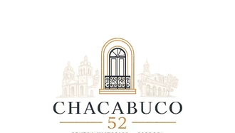
CASA DOCTA CHACABUCO 52Centro Histórico · CórdobaUn hogar amplio, luminoso y tranquilo para descubrir la ciudad, trabajar, estudiar o estar cerca de lo que necesitás.
5,0 de 5 · Favorito entre huéspedes
Gracias a quienes nos eligen y comparten su experiencia en Casa Docta Chacabuco 52.
Calificación según el reconocimiento de Airbnb compartido por el alojamiento. Puede variar con nuevas evaluaciones.
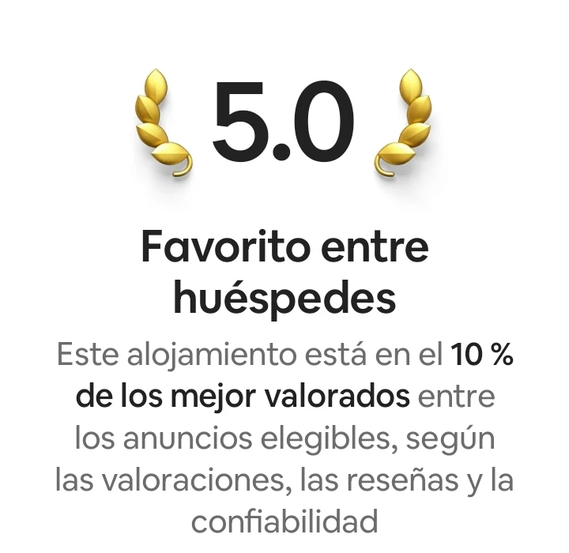
Hay quienes llegan a Córdoba para conocer su patrimonio histórico; quienes viajan por trabajo, estudios, tratamientos médicos o para visitar a familiares o amistades. Casa Docta responde a tus necesidades con una ubicación estratégica y espacios cómodos, silenciosos y seguros.
El departamento familiar, ubicado en un edificio de construcción sólida, combina la cercanía con una ciudad activa y la tranquilidad de un ambiente interno. Al cerrar la puerta, podés dejar atrás el bullicio y disfrutar de tu propio espacio. Cuenta con dos baños: uno principal y uno de servicio, con acceso desde el balcón.

Ambientes funcionales para descansar, compartir una comida o acomodarte durante varios días.
Un dormitorio con cama doble y otro con dos camas individuales. Ambos cuentan con placares, cortinas blackout, ventilador de techo y calefacción eléctrica.
Un ambiente amplio y luminoso, con mesa para compartir y sofá cama doble como alternativa para ampliar la capacidad del alojamiento a 4/5 personas.
Cocina con horno, microondas, cafetera, pava eléctrica, tostadora, licuadora y vajilla para preparar y disfrutar tus comidas.
Unidad interna en sexto piso y aberturas herméticas y tela mosquitera que contribuyen al aislamiento acústico y al descanso.
Un espacio de servicio con plantas y cenicero, desde el que se accede al baño de servicio. Fumar está permitido únicamente en el balcón.
Supermercado en el mismo edificio y lavandería en las inmediaciones para resolver necesidades cotidianas. Opciones de cocheras bajo techo a pocos metros.
La unidad no cuenta con aire acondicionado ni lavarropas propio. La calefacción eléctrica está instalada en los dormitorios.
Boulevar Chacabuco 52
Centro Histórico · Córdoba Capital
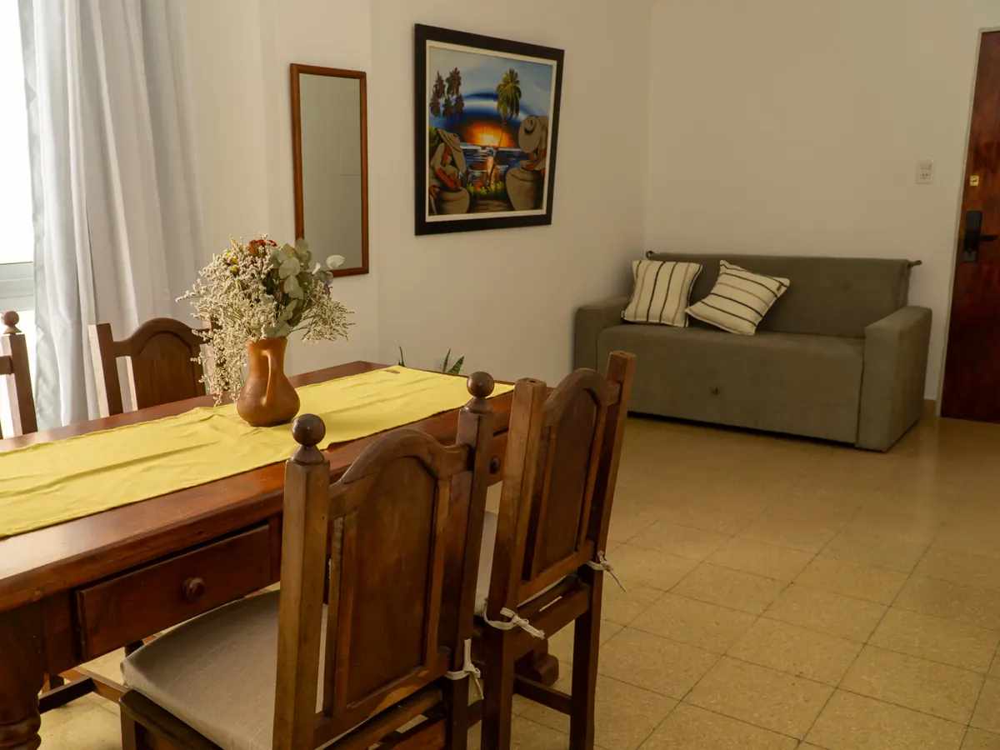
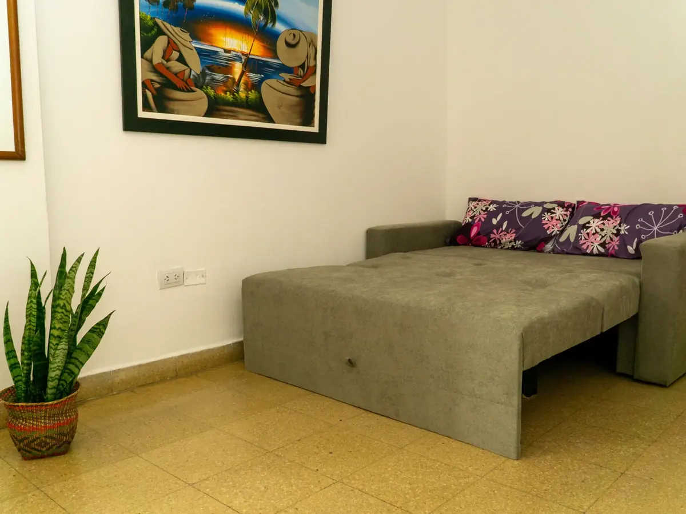

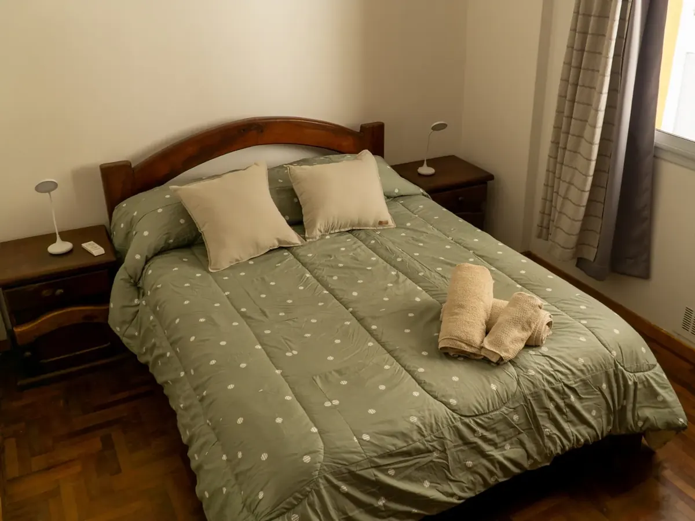
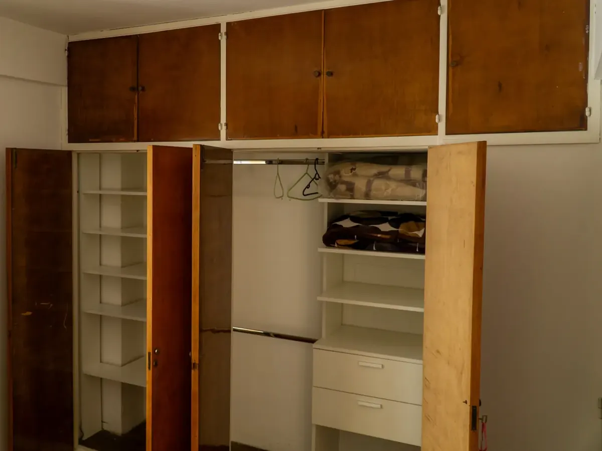

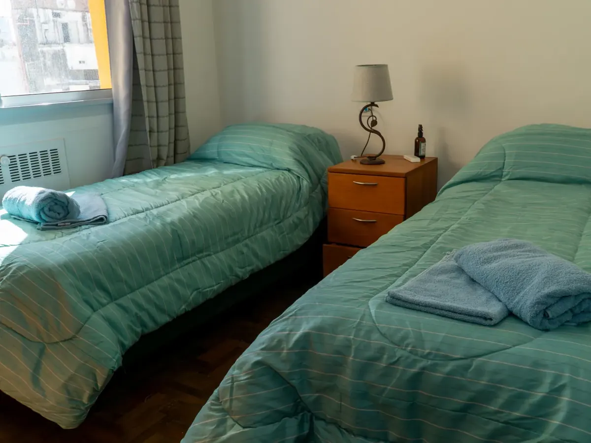


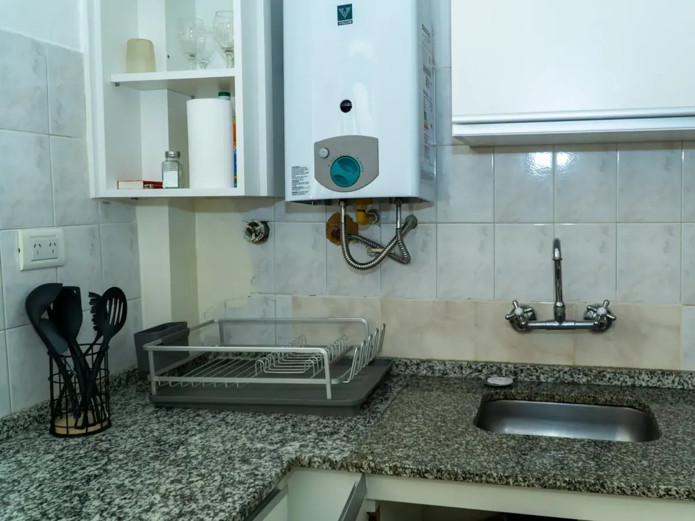
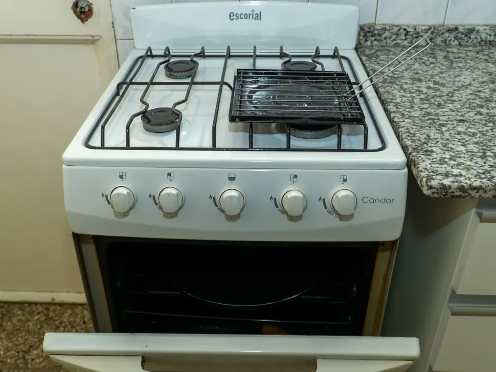

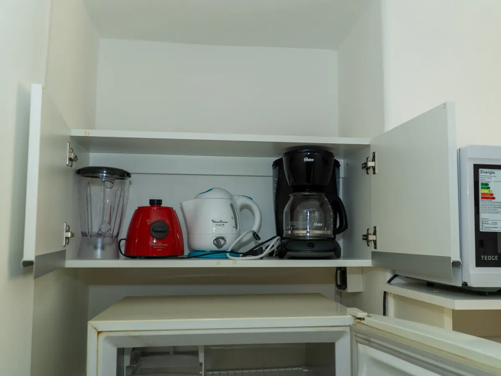
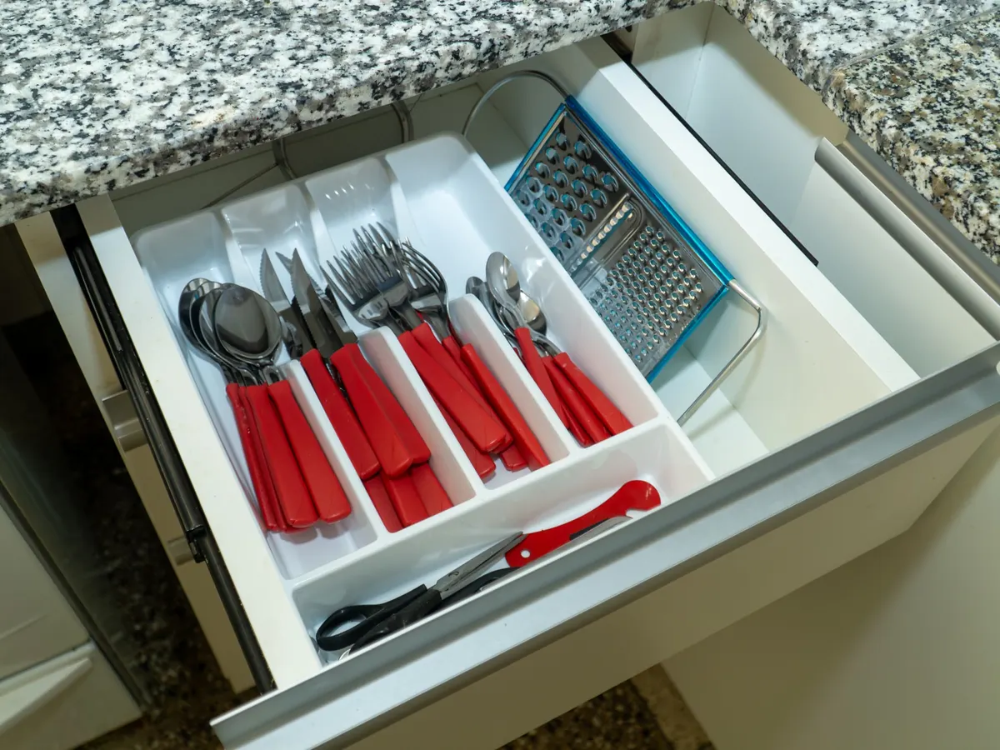

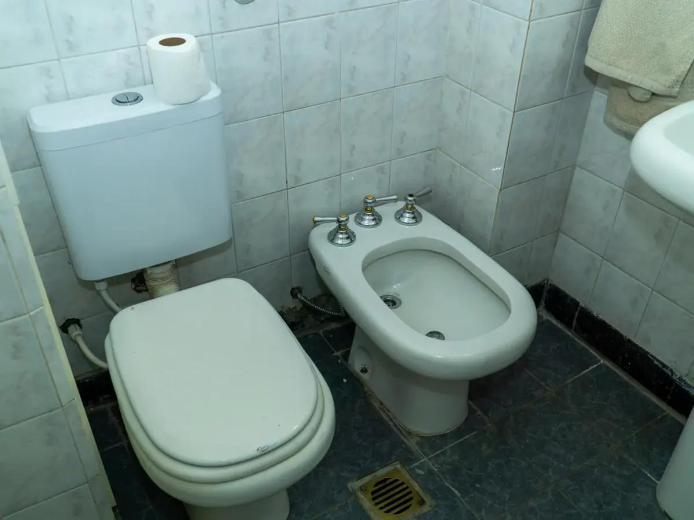

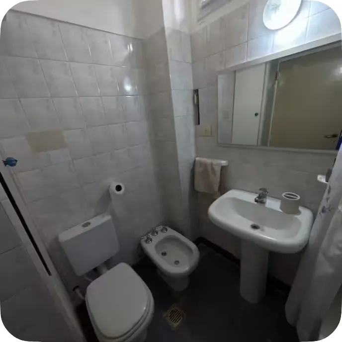

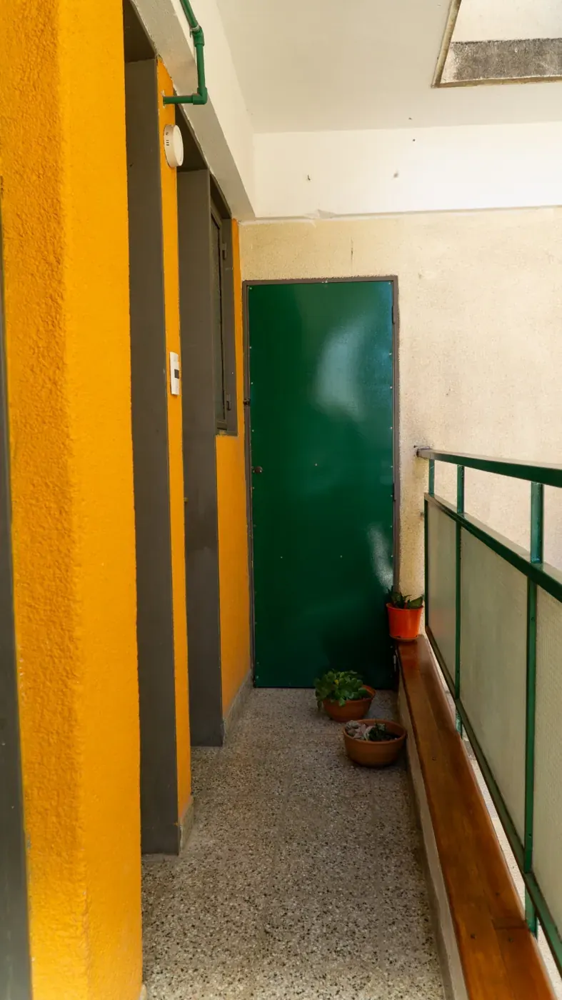
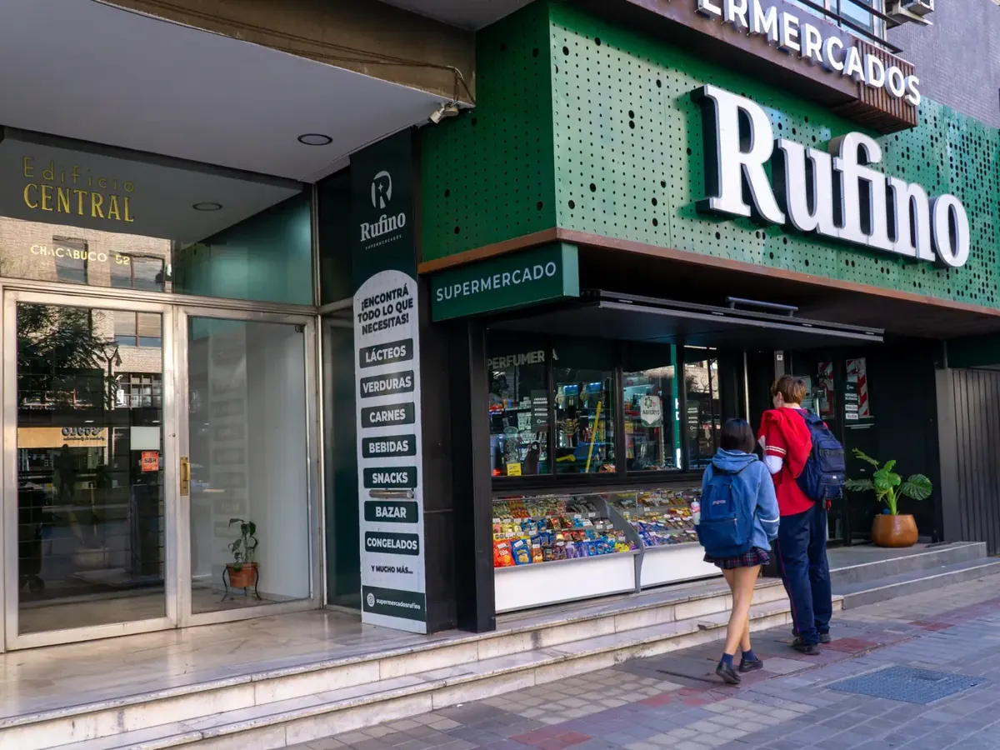


Sobre Boulevar Chacabuco, en el Centro Histórico, entre el área histórica y comercial y la dinámica de Nueva Córdoba. Una base práctica para recorrer la ciudad y llegar a distintos puntos de interés.
Tiempos orientativos; conviene verificarlos según el recorrido elegido.
Boulevar Chacabuco 52, Centro Histórico de Córdoba. Buscá el ingreso del Edificio Central, junto al supermercado Rufino.

Recorré un campus de más de cien hectáreas, con arboledas, facultades de la UNC y la UTN, bibliotecas, museos y espacios deportivos.
Ver en el mapa ↗
A unos 12 minutos a pie, podés recorrer la iglesia de la Compañía de Jesús, la Capilla Doméstica, el antiguo claustro universitario y el Colegio Nacional de Monserrat.
Ver en el mapa ↗ Foto: Wikimedia Commons
Foto: Wikimedia CommonsEn Av. Hipólito Yrigoyen 511. Recorré las salas de arte, el gran hall central y los jardines que rodean el palacio.
Ver en el mapa ↗
El antiguo edificio de la Escuela Olmos alberga un centro comercial con tiendas, cines y patio de comidas.
Ver en el mapa ↗
Entre puestos de artesanías y galerías, podés hacer una pausa para comer o tomar algo cerca de La Cañada.
Ver en el mapa ↗
Café de especialidad en la esquina de Chacabuco y San Lorenzo, en Nueva Córdoba, a unas seis cuadras del departamento.
Ver en el mapa ↗Caminá por las calles de este barrio bohemio y descubrí anticuarios, galerías, bodegones y cervecerías alrededor del Paseo de las Artes.
Ver en el mapa ↗
Un paseo para caminar junto al lago, hacer deporte al aire libre o parar a comer en los alrededores.
Ver en el mapa ↗
A unas 15 cuadras de Chacabuco 52, la plaza es un punto de partida para recorrer Nueva Córdoba y conocer el Museo Iberoamericano de Arte Urbano.
Ver en el mapa ↗Consultá el calendario informativo en Andes Rooms. Las fechas están sujetas a confirmación; para consultar tu estadía, escribinos por WhatsApp o correo.
Abrir calendario de Andes Rooms ↗El consorcio del edificio no permite su ingreso, por lo que tampoco pueden alojarse en el departamento.
Para confirmar la reserva, se solicita un adelanto del 30 % por transferencia a la cuenta bancaria que te informaremos. El saldo se abona al ingresar, por transferencia o en efectivo.
Gracias por cuidar Casa Docta y respetar el descanso de quienes viven en el edificio.
Te recibimos en el edificio y te entregamos el llavero electrónico para las puertas de acceso. Para entrar al departamento, ingresá el código numérico en la cerradura inteligente. Al salir, la cerradura se bloquea automáticamente. Usá el mismo código para volver a entrar.
Los ventiladores de techo y sus luces se manejan con el control remoto. Las luces también se pueden encender desde el interruptor de pared.
El televisor tiene Cablevisión con 40 canales. Buscalos a partir del canal 80.
Las aberturas tienen tela mosquitera. Mantené los mosquiteros cerrados para evitar que entren insectos.
Al retirarte, dejá la bolsa cerrada en el cesto del descanso de la escalera de tu piso, al lado del ascensor.
Consultá por estadías prolongadas y contanos qué fechas tenés en mente. Te responderemos por correo para ayudarte a organizar tu visita.
Consultá por estadías prolongadas:
chacabuco52cordoba@gmail.comWhatsApp: +54 9 351 214 8993
 Escaneá y escribinosApuntá la cámara del celular al código para abrir WhatsApp con tu consulta.
Escaneá y escribinosApuntá la cámara del celular al código para abrir WhatsApp con tu consulta.